Ce document est mis à disposition selon les termes de la Licence Creative Commons Attribution - Pas d’Utilisation Commerciale - Partage dans les Mêmes Conditions 4.0 International.
- 1. Références
- 2. Mise en place
- 3. Premiers pas
- 3.1. Transformation d’une page en application Angular
- 3.2. Affichage de données simples
- 3.3. Affichage de données tabulées
- 3.4. Utilisation de structure conditionnelle
- 3.5. Refactoring en script
- 3.6. Ajout d’onglets
- 3.7. Utilisation de classe CSS conditionnelle
- 3.8. Utilisation du clic Angular
- 3.9. Filtre par onglet
- 3.10. Ordonnancement
- 3.11. Utilisation d’un scope explicite
- 3.12. Implémentation du MVC
- 3.13. Finalisation de la séparation des responsabilités
- 4. Industrialisation du développement
- 5. Utilisation de l’API Marvel
- 6. Test du code
- 7. Compatibilité mobile
- 8. Aller plus loin
1. Références
- En anglais :
-
-
Site officiel d’Angular JS
-
Tutorial Angular JS
-
API Angular JS
-
- En français :
2. Mise en place
Les étapes nécessaires pour bien démarrer le travail sont les suivantes.
2.1. Récupération des sources
Pour disposer des sources, utiliser git :
git clone https://github.com/formations/angular-comics.gitLa branche de travail est master.
2.2. Téléchargement des modules
Le workshop est un projet Angular JS basé sur :
- npm
-
Il faut tout d’abord télécharger les dépendances npm.
npm install - Bower
-
Puis, installer Bower.
sudo npm install -g bowerUne fois Bower installé, télécharger les dépendances web du projet en exécutant la commande suivante :
bower install - Grunt
-
Enfin, installer la ligne de commande Grunt :
sudo npm install -g grunt-cli
2.3. Quelques conseils de développement
En phase de développement, tout ne fonctionne pas toujours la première fois. L’utilisation des outils de développement du navigateur, par exemple "Chrome Dev Tools" ou l'addon "Firebug" pour Firefox, peuvent se révéler d’une aide précieuse et permettre de corriger les bugs.
-
Consulter les erreurs dans la fenêtre de log
-
Utiliser l’instruction
log.debug()avec le message approprié -
Mettre des points d’arrêt dans le code JavaScript pour afficher les valeurs des variables :
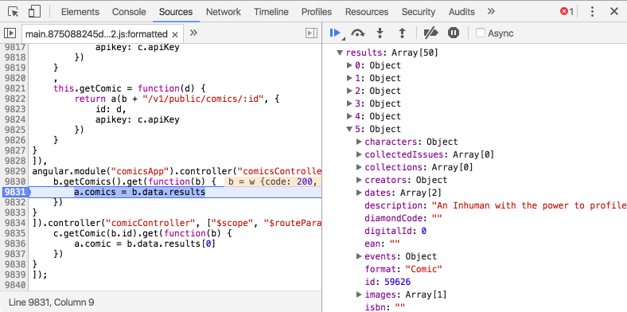 -
Utiliser la version non-minifiée d’Angular :
<!-- Version minifiee --> <script type="text/javascript" src="../bower_components/angular/angular.min.js"></script> <!-- Version NON-minifiee --> <script type="text/javascript" src="../bower_components/angular/angular.js"></script> -
Désactiver l’utilisation du cache, spécifiquement pour l’utilisation de
<ng-view>:
3. Premiers pas
Le travail consiste à développer une application pour visualiser des comic books.
3.1. Transformation d’une page en application Angular
La première étape consiste à transformer la page existante app/store.html en application Angular JS en utilisant la directive ng-app.
3.2. Affichage de données simples
Regarder l’utilisation de la directive ng-init. Utiliser les données du modèle pour afficher les informations suivantes dans la page :
-
Image (thumbnail)
-
Titre (title)
-
Numéro (issueNumber)
-
Prix (price)
-
Description (description)
3.3. Affichage de données tabulées
- Pour les données
-
Remplacer le snippet suivant :
comic = { id: 21464, title: 'Powers (2000)', issueNumber: 18, thumbnail: 'image/image_not_available.jpg', price: 3.45, description: '...' }Par le snippet suivant et le contenu du fichier
help/comics.json:comics = <<contenu du fichier>> - Pour la page
-
Remplacer le snippet suivant :
<div class="media"> ... </div>Par le contenu du fichier
help/list.html.
Maintenant, utiliser la directive ng-repeat pour itérer sur la collection de comics et afficher les données de chacun d’entre eux.
Corriger le code Angular pour afficher correctement l’image et le prix.
3.4. Utilisation de structure conditionnelle
La plupart des prix sont à 0. En utilisant la directive ng-if, n’afficher le prix que si celui-ci est positif.
3.5. Refactoring en script
Jusqu’à maintenant, aucune JavaScript n’a été produit, tout est géré par Angular. Toutefois, la page souffre d’un poids important à cause de l’initialisation des données JSON.
Il est temps d’appliquer le principe de séparation des responsabilités, avec d’une part la page HTML et d’autre par un fichier JavaScript.
-
Créer un fichier
app/script.js -
Y créer une application Angular
comicsApp -
Y créer un contrôleur
comicsControllerassocié -
Créer une propriété
comicsdans le contrôleur -
L’initialiser avec le contenu de la variable
comicsde la directiveng-initexistante -
Supprimer la directive
ng-initde la page -
Ajouter la directive
ng-controllerdans la page en utilisant le nom adaptéDans la valeur de
ng-controller, ne pas oublier d’utiliseraspour pouvoir référencer le contrôleur et ses propriétés dans la page. -
Adapter l’affichage des données pour être compatible avec la nouvelle structure
-
Référencer le fichier JavasScript dans la page HTML
-
Tester que rien n’a changé
3.6. Ajout d’onglets
Afin de continuer le workshop, il est nécessaire d’ajouter des onglets.
Pour ce faire, remplacer le snippet suivant :
<ul class="media-list">
...
</ul>par celui-ci :
<div class="tab-content">
<ul class="media-list tab-pane fade in active">
...
</ul>
</div>Puis, insérer le contenu du fichier help/tabs.html juste avant.
3.7. Utilisation de classe CSS conditionnelle
Attribuer à l’onglet la classe CSS active permet de l’afficher comme l’onglet sélectionné (la classe supprime la bordure horizontale du bas).
-
Créer une propriété
tabIndexdont la valeur initiale est0dans le contrôleur -
Toujours dans le contrôleur, créer une fonction
isSelected():-
La fonctione accepte en unique paramètre un index
-
La fonction retourne un booléen qui vérifie l’égalité entre le paramètre et
tabIndex
-
-
Pour chaque onglet, utiliser la directive
ng-classpour attribuer la classe CCS active si l’onglet courant est sélectionné.
3.8. Utilisation du clic Angular
L’objectif de cette section est de faire en sorte que lorsque l’utilisateur clique sur un onglet, ce dernier apparaisse sélectionné. Pour ce faire :
-
Créer une méthode
select() -
Utiliser la directive
ng-clickqui utilise cette dernière pour changer la propriététabIndex
3.9. Filtre par onglet
L’objectif de cette section est d’afficher uniquement les comics pertinents pour chaque onglet.
Par exemple, lorsque l’onglet "Powers" est sélectionné, seuls les comics dont un attribut possède la valeur (exacte) "Powers (2000)" sont affichés. Sur le premier onglet, tous les comics sont affichés.
Pour ce faire, créer une nouvelle propriété du contrôleur nommée titleFilter et l’utiliser dans la directive ng-repeat.
3.10. Ordonnancement
A ce point, les comics sont affichés par ordre de déclaration dans le fichier JSON. Il est préférable de les afficher par leur numérotation dans la série.
Utiliser l’attribut issueNumber pour effectuer le tri.
|
Vérifier les comics affichés sur le premier onglet. Il est nécessaire de trier d’abord par série, puis par numéro. |
3.11. Utilisation d’un scope explicite
L’utilisation des propriétés du contrôleur rend malaisée son utilisation au niveau de la page HTML.
Refactorer le code du contrôleur et de la page pour utiliser un scope explicite.
Vérifier que rien l’application se comporte de manière identique.
3.12. Implémentation du MVC
Actuellement, le contrôleur source les données par l’intermédiaire de la variable $scope.comics. Cette approche est contraire au paradigme Modèle Vue Contrôleur qui impose une stricte séparation des responsabilités. Pour implémenter un MVC correct, nous allons (enfin) créer un service Angular.
-
Créer un nouveau script
script/service.js -
Le référencer dans la page HTML
-
Y créer un nouveau service angular
comicsService -
Rattacher ce service à l’application Angular
comicsAppAttention à la syntaxe de la fonction
modulequi en fonction du nombre d’arguments crée un nouveau module ou référence un module existant -
Dans ce service :
-
Créer une propriété
comicsqui contient la liste des comics -
Créer une fonction
getComics()qui renvoit la valeur de la variable comics
-
-
Modifier le contrôleur :
-
Injecter le nouveau service
comicsService -
Modifier la variable
$scope.comicspour appeler la méthodegetComics()du service
-
3.13. Finalisation de la séparation des responsabilités
Une fois l’étape précédente effectuée, il reste le code du contrôleur dans le fichier script/app.js
A l’instar de l’étape précédente, déplacer ce code dans un fichier dédié script/controller.js afin d’obtenir le découpage suivant par fichier :
| Fichier | Responsabilité |
|---|---|
|
Création du module Angular |
|
Gestion des services Angular |
|
Gestion des contrôleurs Angular |
4. Industrialisation du développement
Les navigateurs actuels implémentent le Same-origin policy afin d’éviter de charger des ressources provenant de domaines non autorisés, par exemple que la page servie par le domaine mondomaine.com charge dynamiquement une ressource depuis le domaine hacker.com.
Comme les sections suivantes nécessitent le chargement de plusieurs ressources de script et que le protocole file:// ne permet d’en charger plusieurs qu’en désactivant la sécurité du navigateur, il est nécessaire de mettre en place un serveur HTTP.
Le lancement du serveur HTTP et le déploiement de l’application dans ce dernier nécessitent une automatisation des tâches. Dans le workshop, cette dernière est assurée par Grunt. Prendre quelques minutes pour lire le fichier.
|
Grunt est également configuré pour vérifier la bonne qualité du code JavaScript. Corriger les erreurs / avertissements signalés avant de continuer. |
4.1. Minification du JS
Afin que la charge de téléchargement initial soit la moins lourde possible - les appels subséquents iront se sourcer directement depuis le cache local, il est une bonne pratique de minifier les fichiers de scripts (et de styles).
Grunt est déjà configuré pour cela. Il est toutefois nécessaire d’encadrer ces déclarations par un commentaire qui sera traité par Grunt lors de la construction.
<!-- build:js scripts/main.js -->
<script type="text/javascript" src="script/app.js"></script>
<script type="text/javascript" src="script/service.js"></script>
<script type="text/javascript" src="script/controller.js"></script>
<!-- endbuild -->4.2. Mise en place du serveur HTTP
Pour lancer le serveur HTTP, il est uniquement nécessaire de lancer cette commande :
grunt serveLe script Grunt existant est déjà configuré de manière adéquate. L’exécution de la commande va créer un répertoire dist à la racine du projet, démarrer un serveur HTTP embarqué accessible sur le port 9000 puis ouvrir un navigateur à cette adresse.
Vérifier que rien l’application se comporte de manière identique lorsqu’elle est servie par le serveur HTTP.
4.3. Utilisation des includes
Afin de pouvoir maintenir plus facilement l’application, découper la page en fragments :
-
Renommer le fichier
store.htmlenindex.html -
Dans ce dernier :
-
Déplacer le contenu du
divqui comporte la classerowdans un fichiercomics.html -
Utiliser la directive
ng-includepour inclure celui-ci dans le fichierindex.html
-
-
Modifier le fichier
Gruntfile.jspour que le fichierindex.htmlsoit la page présentée par défaut (cf. ligne 141)
Vérifier que rien l’application se comporte de manière identique à précédemment.
4.4. Préparation de la navigation
Afin de préparer la suite du développement, inclure la barre de navigation juste au-dessous de la balise <h1>. Le fichier concerné est navbar.html disponible dans le dossier include.
4.5. Implémentation de la barre de navigation
Implémenter chaque lien de la barre de navigation via une route Angular. La table de routage est la suivante :
| Lien | Fichier |
|---|---|
Home |
|
About us |
|
Comics |
|
|
Ne pas oublier :
|
4.6. Affichage détaillé d’un comic
Lorsque l’utilisateur clique sur le titre d’un comic, afficher le descriptif détaillé de celui-ci à l’aide de la vue view/comic.html et de la directive ng-route :
-
Ajouter un lien sur le titre du comic dans la liste. Utiliser comme paramètre l’attribut
iddu comic -
Ajouter au service
comicServiceune fonctiongetComic()qui retourne le comic dont l’id est passé en paramètre -
Ajouter un contrôleur
comicControllerqui appelle cette nouvelle fonction. Utiliser le service$routeParams -
Ajouter une route utilisant
idet qui pointe vers ce nouveau contrôleur
4.7. Utilisation du titre et du numéro pour la navigation
A présent, changer le code pour utiliser title et issueNumber à la place de id. Cette modification permet à un utilisateur d’afficher directement le détail d’un comic dont il connait le titre et le numéro.
Vérifier que rien l’application se comporte de manière identique.
5. Utilisation de l’API Marvel
Le but de cette section est de supprimer du service les données "en dur" et d’utiliser l’API offerte par Marvel.com.
5.1. Création et configuration de compte
-
La première étape consiste à créer un compte développeur sur developer.marvel.com.
-
Puis, récupérer la clé d’API publique.
-
Ne pas oublier de mettre à jour la liste des site habilités avec
localhost.

5.2. Nettoyage du code
-
Dans
comicsController, supprimer le code relatif aux onglets -
Dans
comics.html, supprimer les onglets eux-mêmes - y compris<div class="tab-content"> -
Dans
service.js, supprimer la variablecomicset sa valeur -
Revenir à l’utilisation de l’attribut
idpour afficher le détail d’un comic
5.3. Appel de l’API via $http
-
Créer une constante Angular pour contenir la base de l’URL de l’API - https://gateway.marvel.com:443
-
Injecter cette constante dans le service
comicsService -
Créer un nouveau service
configServicequi renvoit la valeur de la clé d’API -
Injecter ce service dans le service
comicsService -
Modifier le service
comicsServiceen remplaçant la variablecomicspar l’utilisation judicieuse de la directive$httppour charger les données depuis le serveur Marvel :La documentation complète de l’API Marvel est disponible en-ligne.
-
La liste des comics est accessible via /v1/public/comics, sans oublier d’utiliser le paramètre de requête
apikey(et le paramètrelimitsi l’on veut plus que 20 éléments) -
Le détail d’un comic est accessible via /v1/public/comics/{id}, sans oublier d’utiliser le paramètre de requête
apikey
-
-
Modifer le code contrôleur pour valorise le
$scopeavec la liste des comics (ou le détail de l’un d’entre eux)
5.4. Appel de l’API via $resource
Remplacer l’utilisation de $http par $resource.
|
Ne pas oublier :
|
6. Test du code
L’objectif de cette section est de s’assurer que le code répond bien aux exigences.
Dans le cadre de ce workshop :
-
Karma est l’exécuteur de tests unitaires
-
Protractor est l’exécuteur de tests end-to-end
-
Jasmine est le framework de test
Le build est déjà configuré pour le lancement des tests. Il suffit de créer ces derniers :
-
les tests unitaires dans le dossier
test/unit -
les tests end-to-end dans
test/e2e
La commande à lancer est :
grunt testCette commande :
-
exécute les tests unitaires
-
construit l’application
-
lance le serveur web local
-
exécute les tests end-to-end
6.1. Tester que le contrôleur alimente les comics
-
Créer un fichier
test/unit/controller.spec.js -
Y créer une suite
comicsControllervia la fonctiondescribe() -
Dans celle-ci, initialiser le module
comicsAppavant chaque spécificationbeforeEach(module('comicsApp')); -
Puis, créer une spécification pour vérifier que l’interaction entre le contrôleur et le service alimente la variable
comicsdu scope-
Injecter les ressources nécessaires pour le test
-
Créer un objet scope vide
{} -
Via
$httpBackend, retourner une réponse comportant des comics-
Pour faire simple, l’expression régulière identifie n’importe quelle chaîne de caractères
new RegExp('.*') -
L’entité JSON comporte un tableau d’objets, chacun avec des paires nom-valeur (par exemple
id,titleetissueNumber){ "data": { "results": [ { "id": 42882, "issueNumber": 6, "title": "Lorna the Jungle Girl (1954) #6", }, { "id": 43092, "issueNumber": 7, "title": "Brilliant (2011) #7", } ] } }
-
-
Créer le contrôleur
comicsControlleren utilisant la directive$controlleret en passant les paramètres nécessaires -
Ne pas oublier de forcer la résolution via
$httpBackend.flush -
Vérifier que le scope est bien rempli avec les comics de la réponse mock
-
Pour n’exécuter que les tests unitaires :
grunt karma6.2. Tester l’application déployée
-
Créer un fichier
test/e2e/spec.js -
Y créer une suite
comicsAppvia la fonctiondescribe()
6.2.1. Tester l’écran d’accueil
-
Naviguer sur l’écran d’accueil via l’objet
browser -
Vérifier qu’il y ait une unique balise
<img>sur la page
6.2.2. Tester l’écran A propos
-
Naviguer sur l’écran A propos via l’objet
browser -
Vérifier qu’il y ait une unique balise
<address>sur la page -
Vérifier également la présence d’une unique balise
<blockquote>
7. Compatibilité mobile
L’objectif de cette section est de garantir que l’application s’affiche de manière adaptée sur mobile.
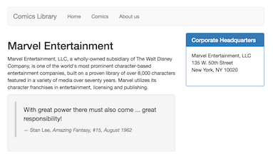

7.1. Tester l’affichage sur mobile
Dans Chrome, afficher les outils de développeur (⌥+⌘+I). Dans la frame qui s’affiche, localiser le bouton de changement d’appareil (⌘+⇧+M).
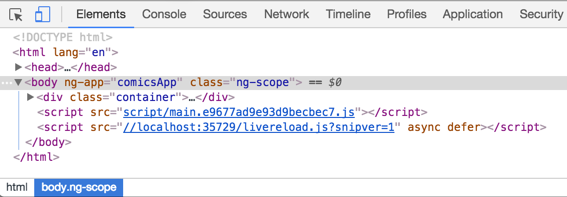
Cliquer sur le bouton mentionné ci-dessus : la barre de changement d’appareils s’affiche en haut. Il est maintenant possible de changer d’appareil dans la liste déroulante.
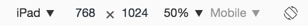
Si l’application a été correctement développée, l’affichage doit s’adapter à la taille de l’appareil pour en faciliter la lecture.
7.2. Rendre la barre de navigation responsive
Bootstrap offre une barre de navigation responsive par défaut. L’implémentation HTML de la barre actuelle est incorrecte. Corriger celle-ci pour la rendre responsive à l’aide de la documentation.
Une fois la correction effectuée, vérifier que la barre affiche les éléments de manière verticale sur les dispositifs de très petite taille (c’est-à-dire les téléphones) en utilisant la méthode décrite au paragraphe précédent.
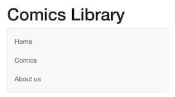
Puis, déplacer le titre de son emplacement initial vers l’emplacement d’en-tête de la barre de navigation (navbar-header) à l’aide de la documentation. Le résultat est le suivant :
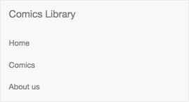
Enfin, ajouter une marge au-dessus de la barre de navigation pour rendre l’écran plus "aéré".
7.3. Rendre la page de détail responsive
Un écran de bureau disposé en mode paysage permet d’afficher l’intégralité des information horizontalement. Au contraire, les téléphones sont souvent consultés en mode portrait. L’affichage doit donc s’adapter à cette contrainte pour disposer les informations.
Il s’agit de modifier la page de détail pour obtenir le résultat suivant lorsqu’elle est consultée sur un téléphone :
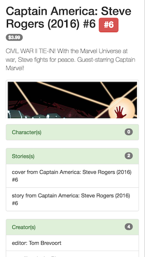
Et sur tablette :
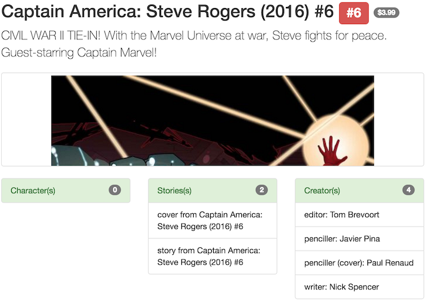
|
L’image n’est pas coupée, il s’agit uniquement de pouvoir afficher la page dans cette documentation. |
Voici les étapes à suivre :
- Affichage des colonnes d’information
-
En s’aidant de la documentation sur les options du système de grille, modifier l’affichage des colonnes afin qu’elles s’affichent l’une en dessous de l’autre sur les téléphones uniquement. Dans le reste des cas, elles continuent à s’afficher l’une à côté de l’autre.
- Adapter l’affichage de l’image
-
L’image actuelle est positionnée sur les 4 premières colonnes de gauche quel que soit le dispositif d’affichage. Modifier les classes ainsi :
-
Sur les téléphones, l’image utilise la largeur entière de la grille
-
Sur les tablettes, elle occupe 6 colonnes et est centrée
-
Sur les dispositifs d’affichage plus grands, elle occupe seulement 4 colonnes et est également centrée
-
- Séparer le texte de l’image
-
Disposer le titre sur une ligne dédiée et l’image sur une autre
7.4. Rendre la page de liste responsive
En ce qui concerne la page de liste, les étapes à réaliser sont les suivantes :
- Médias
-
Les médias (
media-list) ne sont pas responsives, il est donc nécessaire de transformer la structure actuelle en ligne de grille standard. - Séparation du texte et de l’image
-
Pour les téléphones et les tablettes, afficher le texte au-dessus de l’image. Pour les autres appareils, afficher la partie textuelle sur les 8 premières colonnes, l’image sur les 4 autres.
Le titre et la description doivent être affichés dans des blocs séparés.
- Responsive image
-
Adapter la taille de l’image à la largeur de l’écran en utilisant la classe CSS adaptée.
Le résultat attendu est le suivant :
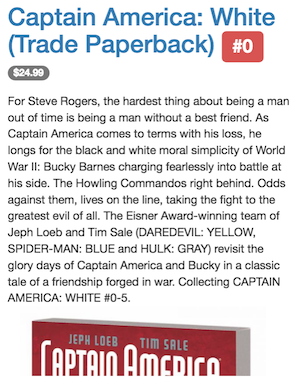
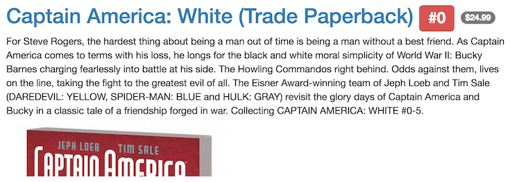
7.5. La touche finale
Afficher l’intégralité des éléments de menu occupe une large partie de l’écran sur les appareils de dimension réduite. Dans ce cas, il est d’usage d’afficher un bouton "hamburger" qui permet de déplier/plier les éléments du menu.
Bootstrap offre les fonctionnalités nécessaires, il suffit de les assembler:
-
Tout d’abord, ajouter un bouton situé à l’extrémité droite de la barre de navigation.
-
Ajouter l’icône de hamburger. Pour cela, s’aider de la "librairie" Glyphicons, également partie de la distribution de Bootstrap (les icônes sont déjà intégrés via la feuille de style
bootstrap.css). -
Afin de permettre le comportement dynamique, référencer le script
collapse.jsqui fait partie de la distribution de Bootstrap. -
Puis, ajouter le comportement au bouton à l’aide de la documentation du composant collapse.
Tout se fait de manière déclarative, il n’y a pas besoin d’écrire du code JavaScript.
-
Enfin, masquer le bouton lorsque les éléments de menu sont affichés horizontalement.
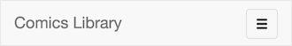
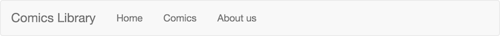
8. Aller plus loin
Quand vous avez fini le workshop, ce n’est pas fini. Il y a toujours des choses à faire, voici quelques possibilités :
-
Utiliser TypeScript
-
Migrer le code en TypeScript
-
Intégrer un transpileur TypeScript au sein du build
-
-
Utiliser EcmaScript 6
-
Rendre le code compatible EcmaScript 6
-
Intégrer un transpileur EcmaScript 6, par exemple Babel au sein du build
-
-
Remplacer les onglets par une vraie section de recherche, incluant :
-
le nombre d’entités retournées sous forme de liste déroulante
-
un champ de texte pour la recherche, par exemple "Spider*"
-
etc.
-